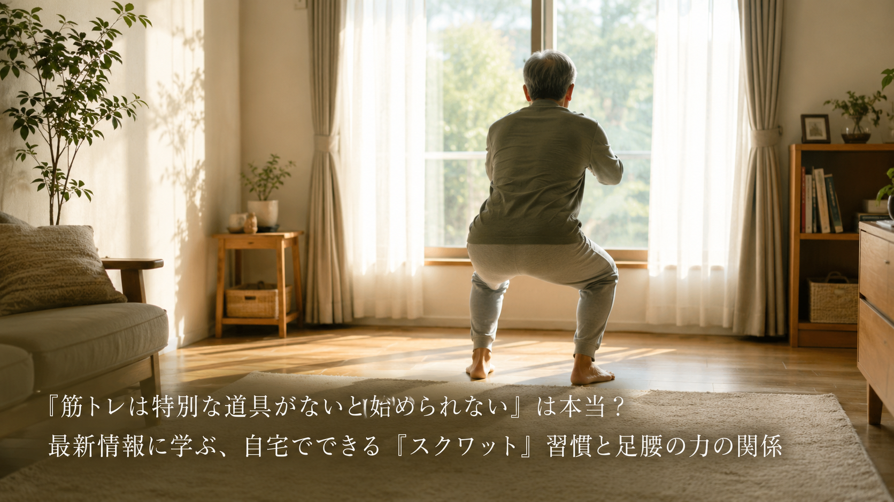
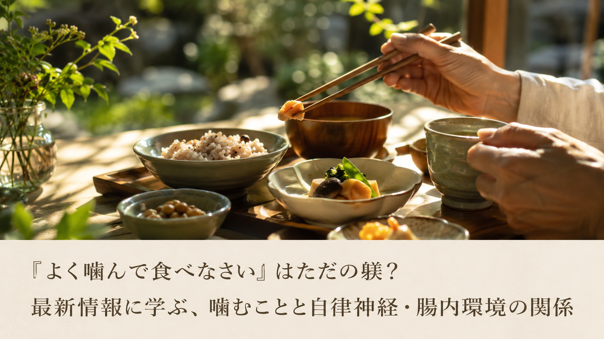
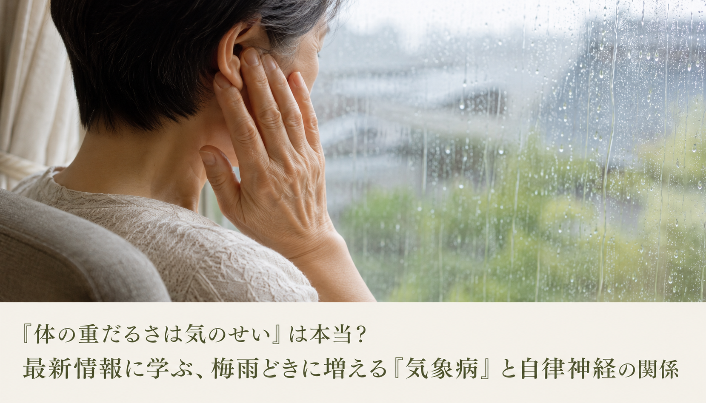
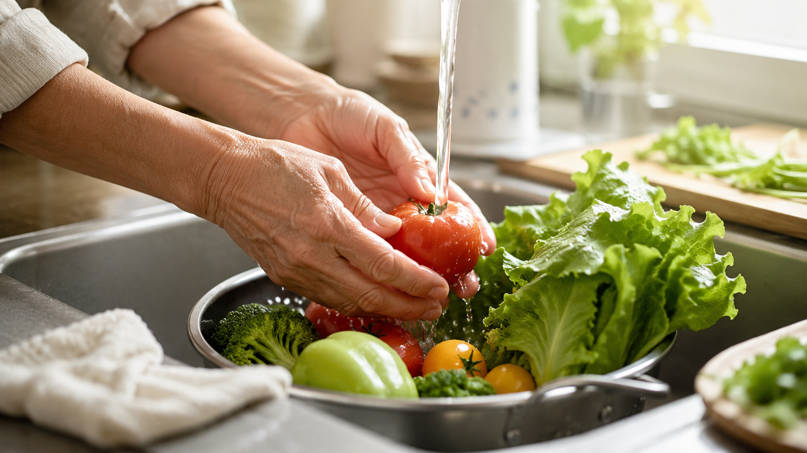
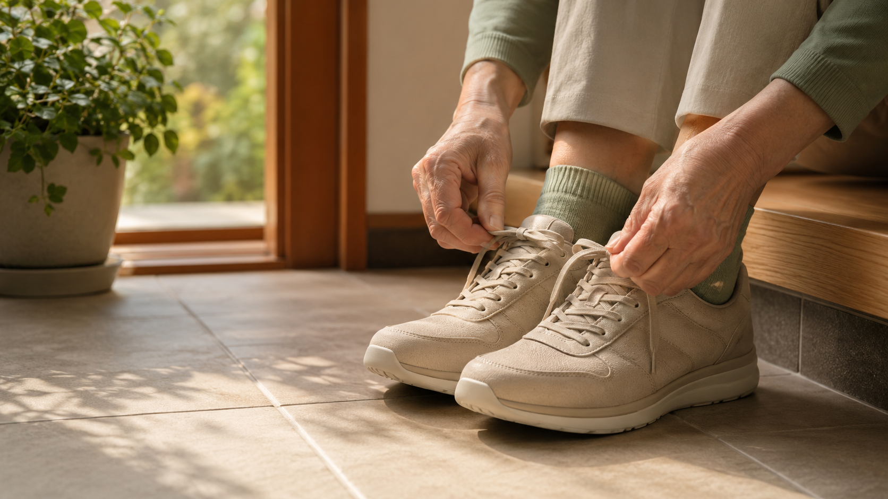
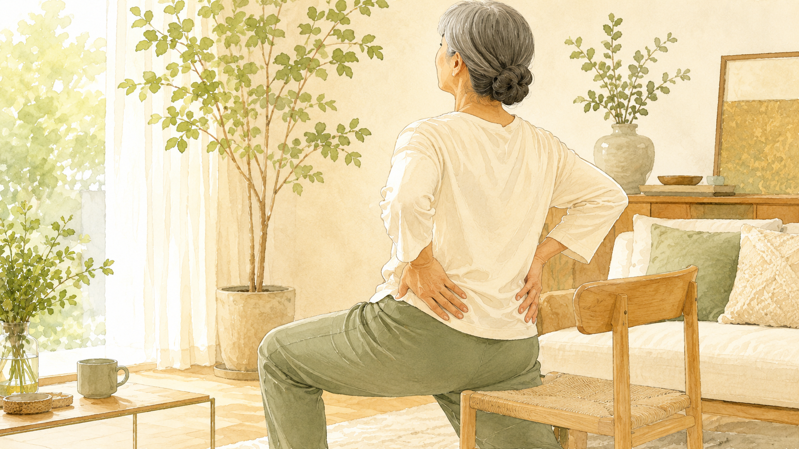
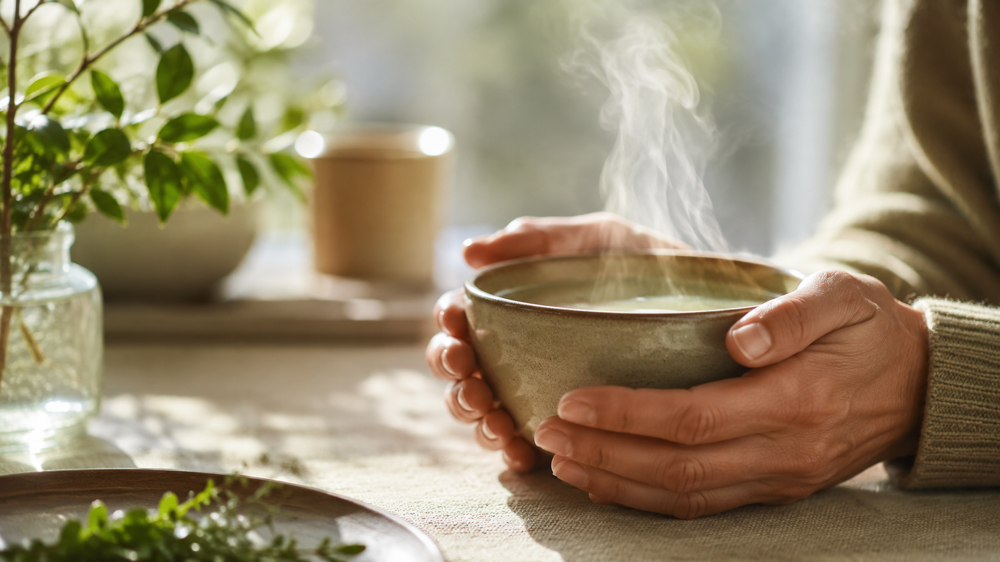
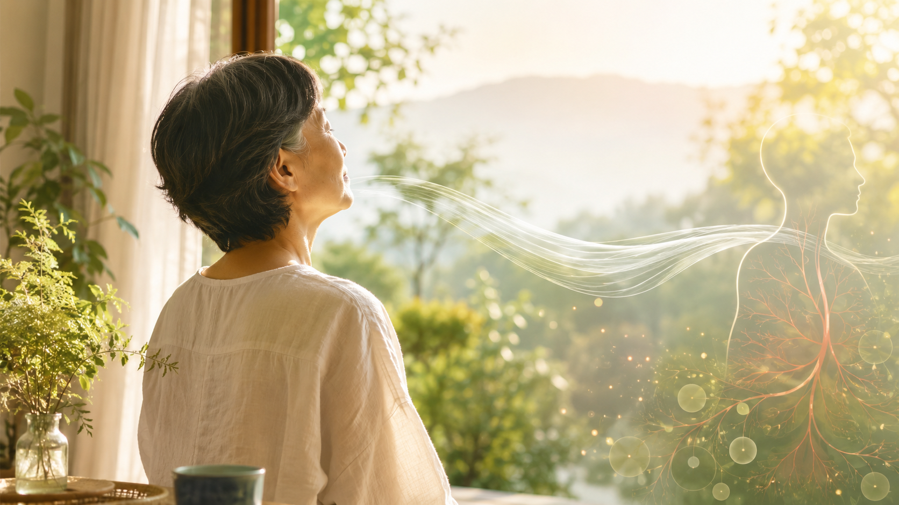

「暑さは気合いで乗り切るもの」は本当？最新情報に学ぶ、猛暑どきの『身につける暑さ対策』と体調管理の関係
我慢するだけが暑さ対策ではない——身につけて涼をとる工夫を実際に体験できる催しの発表から、猛暑どきの体調管理のヒントをわかりやすくご紹介します。

「筋トレは特別な道具がないと始められない」は本当？最新情報に学ぶ、自宅でできる「スクワット」習慣と足腰の力の関係
ジムに通わなくても、自宅で器具なしに取り組めるスクワット——運動習慣を続けるハードルを下げる工夫を、スポーツ・フィットネスメディアの発信からわかりやすくご紹介します。

「よく噛んで食べなさい」はただの躾？最新情報に学ぶ、噛むことと自律神経・腸内環境の関係
噛むことが胃腸の負担を軽くするだけでなく、自律神経や腸内環境、気分の安定にまで関わっている可能性がある——内科クリニックの解説をわかりやすくご紹介します。

「体の重だるさは気のせい」は本当？最新情報に学ぶ、梅雨どきに増える『気象病』と自律神経の関係
雨の日の頭の重さやだるさは、気のせいでもサボりでもない——心療内科クリニックが解説する「気象病」の仕組みをわかりやすくご紹介します。

「弱音を吐かないのが偉い」は本当？最新情報に学ぶ、梅雨どきの心の疲れと『レジリエンス』の関係
頑張り屋な人ほど気づきにくい心の疲れのサインと、回復力＝レジリエンスを育てる視点を、最新の情報からわかりやすくご紹介します。

「セルフケアは特別な時間がないと続けられない」は本当？最新情報に学ぶ、すき間時間と『ながらケア』習慣の関係
テレビを見ながら、読書をしながらでも続けられる——梅雨で在宅時間が増える時期に注目された「ながらケア」という考え方をわかりやすくご紹介します。

「冷凍すれば安心」は本当？内視鏡医の解説に学ぶ、梅雨から夏に多い食中毒対策の落とし穴
鶏肉の加熱不足や冷蔵庫の詰め込みすぎなど、よかれと思ってやってしまう食中毒対策の見落とし——内視鏡医による解説が示す視点をわかりやすくご紹介します。

「足腰の衰えは年齢のせい」は本当？最新情報に学ぶ、歩く力を支える筋肉と転倒予防の関係
長時間座る生活が続くと、歩く力を支える筋肉が硬くなりやすい——医療機関による解説講演が示す視点をわかりやすくご紹介します。
「枕は高さが合えば大丈夫」は本当？最新情報に学ぶ、寝姿勢と首・肩こりの関係
枕選びを高さだけで判断すると、首から肩までの支えのバランスが崩れたままになりやすい——整形外科医監修の解説記事が示す視点をわかりやすくご紹介します。
「疲れた時はじっと休むのが一番」は本当？最新情報に学ぶ、血流とアクティブレストの関係
夜更かしや座りっぱなしによる疲労は、横になって休むだけでは取れにくいことがある——スポーツ医科学の現場の「アクティブレスト」という視点をわかりやすくご紹介します。

「腰や膝の不調は年のせい」は本当？最新レポートに学ぶ、股関節と体の土台の関係
座りっぱなしで硬くなった股関節が、腰や膝への負担に関わっている可能性がある——最新レポートが示す視点をわかりやすくご紹介します。
「体が温まれば副交感神経も上がる」は本当？最新レポートに学ぶ、呼吸と体内環境の関係
体表が温まることと、呼吸が深くなって自律神経が整うことは同じではない——その視点を最新レポートからわかりやすくご紹介します。

「胃腸の不調は食事のせい」は本当？最新レポートに学ぶ、胃腸と体内環境の関係
胃腸の粘膜が持つ"再生力"は、酸素供給・自律神経・睡眠中の呼吸といった体内環境の影響を受けるという視点を、最新レポートからわかりやすくご紹介します。

「濃いサプリほど効く」は本当？最新レポートに学ぶ、栄養と体内環境の関係
サプリ市場1.2兆円時代でも健康不安が減らない理由——成分だけでなく呼吸・睡眠という体内環境に着目した最新レポートを紹介します。

「血流が良くなれば健康になる」は本当？最新レポートに学ぶ、健康の土台づくり
体表の血流や温度を上げることと、自律神経が整うことは同じではない——最新レポートが示す「健康の上流」について、わかりやすく解説します。
今後も健康・予防医療に関する話題を順次追加してまいります。